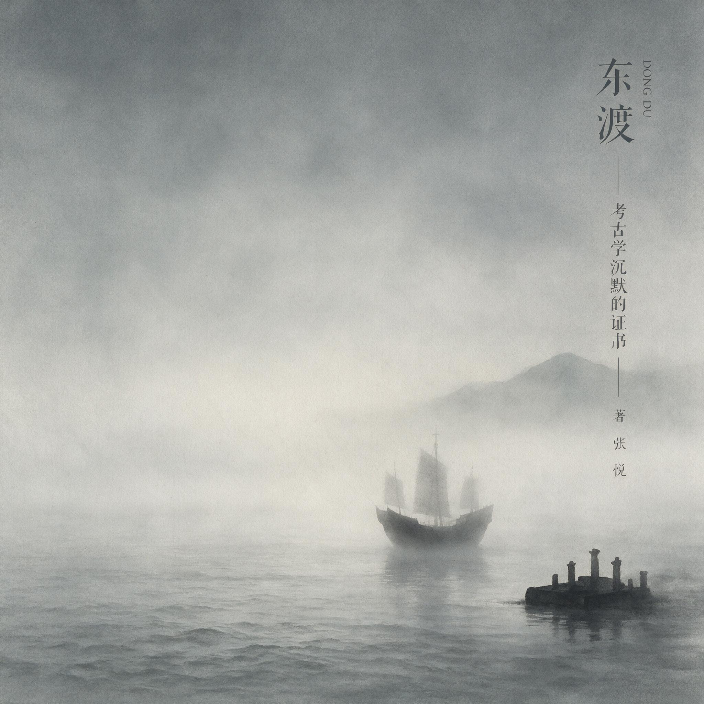

第 29 章
考古学沉默的证词
《隋书·倭国传》记载，大业四年，隋炀帝派遣文林郎裴世清出访倭国。使团船队沿朝鲜半岛西海岸南下，经百济，过对马海峡，抵达九州北部沿海。在那里，裴世清遇到一个自称“秦王国”的小国。他在呈交朝廷的报告中留下一句简洁的描述——“其人同于华夏”。
这句话在《隋书》中静静躺了一千三百多年。它不是被当做徐福传说的证据写下的。裴世清本人很可能根本不知道徐福这个名字。他只是在履行一个使臣最基本的职责：记录沿途所见。
但正是这种无意识——记录者不知道自己在记录什么——让这句话在后世获得了某种考古学式的分量。它像地层中的一粒炭化稻谷，被埋下去的时候只是一顿饭的残留，挖出来的时候却成了断代的依据。
然而炭化稻谷不说话。它只待在那里，等待被解读。而解读的方向，取决于铁锹握在谁手里。
昭和二十二年，1947年，京都大学考古学研究室的年轻助手森浩一第一次走进奈良县橿原市的新泽千塚古坟群。
他二十四岁，刚从军队退伍两年，军服换成了咔叽布工作服，手里的三八式步枪变成了一柄小平铲。战争结束后的日本，物资匮乏，考古队的经费被削减到几乎为零，连发掘用的竹签都要自己削。
森浩一蹲在一座直径约二十米的圆坟前，按照导师末永雅雄的指示，从坟丘东南侧开挖第一条探沟。他挖了三天，在表土层下大约四十厘米的位置，铁锹碰到了一件硬物。不是石头。声音不对。石头碰撞的声音沉闷，这个声音带一点脆。
森浩一改用竹签一点一点剔开周围的泥土。黄土剥离，露出青绿色的锈迹——是一面铜镜。
他小心地把它取出来。铜镜直径约十四厘米，背面铸有复杂的纹饰：内区是四枚乳钉，外区环绕着锯齿纹带和水波纹，中央的钮座呈半球形。
森浩一认得这种形制。这是“方格规矩镜”，东汉中期到晚期在中国流行的样式。它的铸造技术、纹饰母题、合金配比，都与朝鲜半岛乐浪郡出土的东汉铜镜属于同一系统。他把铜镜翻转过来。镜面已经严重锈蚀，照不出任何影像。
但在侧光的照射下，锈层表面隐约可见当初打磨的痕迹——一道道细密的平行线，间距均匀，说明使用了旋转磨具。这种加工工艺，不是弥生时代的日本本土技术能够实现的。
这是一面从大陆渡来的镜子。但它是什么时候来的？怎么来的？被谁带来的？森浩一无法回答这些问题。
他只能把铜镜编号、登记、送进研究室做进一步的类型学分析。末永雅雄在次年发表的《新泽千塚古坟群调查报告》中，将这件铜镜的年代断为公元二世纪至三世纪——比徐福东渡的公元前二一〇年晚了大约四百年。
四百年是什么概念？从秦始皇统一六国到东汉末年，从罗马共和国晚期到塞维鲁王朝，从弥生时代中期到古坟时代初期。四百年，足够一个文明从青铜器进入铁器，足够一种语言分化成三种方言，足够一个传说被讲述、改写、遗忘、再记起，循环往复数十代。
然而在徐福传说的叙事逻辑里，这四百年是不存在的。传说把铜镜、铁器、稻作、纺织这些大陆文化要素，全部压缩进一个时间点——公元前二一〇年，一支船队，一次登陆，一个英雄。
考古学的铁锹挖下去，挖出的不是对这个时间点的确认，而是对这个时间点的解压缩。解压缩之后，四百年就摊开了。新泽千塚的铜镜被收进京都大学综合博物馆的库房，编号KUM-47-1123。森浩一在二十年后成为日本考古学界的权威人物，主持了奈良盆地数十处古坟的发掘。他在1970年出版的《古坟与渡来人》中写道：“每一个遗址都在讲述同一个故事的不同段落。问题在于，我们总是试图把整本书读成一页。”
这本书的厚度，在九州北部被一层一层地揭开。佐贺县神埼郡的吉野里遗址，是日本弥生时代考古的标杆。1986年，佐贺县教育委员会为配合工业园区开发，在吉野里丘陵地带进行了大规模发掘。
推土机还没进场，考古队先在试掘探方中发现了一个环壕的断面——一条宽约三米、深约两米的V形沟，沟壁有明显的挖掘工具痕迹，沟底堆积着黑色腐殖土，土层中包含弥生时代中期的土器碎片。环壕意味着聚落。聚落意味着人群。人群意味着组织。随后的全面发掘揭示出一个面积超过四十公顷的巨型聚落遗址：双重环壕、木栅围墙、望楼遗迹、仓库群、墓葬区、祭祀区，功能分区清晰，布局经过规划。
在遗址北侧的瓮棺葬区，考古队清理出一座编号为“北坟丘墓”的大型墓葬，墓坑中出土了数十件青铜武器——细形铜剑、细形铜矛、铜戈。
这些青铜武器的形制，再次指向了大陆。细形铜剑的剑身细长，中脊明显，截面呈菱形，剑柄与剑身分铸，套接成型。这种铸造技术，与朝鲜半岛南部青铜时代晚期的同类器完全一致。这些来自大陆的物证，并非孤立存在，而是构成了一个不断向列岛扩散的文化波纹。
日本考古学家把这种剑称为“细形铜剑”，韩国考古学家把它归入“细形铜剑文化”的范畴。两个名称，同一个技术传统。
但关键不在形制，而在出土层位。吉野里遗址的细形铜剑出土于弥生时代中期晚段的瓮棺中，碳十四测年给出的年代范围是公元前二世纪至公元前一世纪。这个年代，与徐福东渡的公元前二一〇年高度接近。如果徐福船队真的携带了秦代的青铜武器抵达日本，那么吉野里的细形铜剑，至少在年代上，是可能与之相关的。
然而考古学不允许“可能”直接变成“是”。它要求回答下一个问题：这些铜剑是从哪里来的？
答案藏在合金成分里。1988年，九州大学对吉野里出土的细形铜剑做了铅同位素比值分析。铅同位素不会说谎。不同矿山的铅矿，其铅-206、铅-207、铅-208的比值各不相同，就像矿物的指纹。分析结果显示，吉野里铜剑的铅同位素比值，与朝鲜半岛南部青铜器的比值高度吻合，而与山东半岛出土的战国至秦代青铜器存在明显差异。这意味着什么？
意味着铸造这些铜剑的铜料和铅料，来自朝鲜半岛的矿山，而非山东半岛。意味着携带这些铜剑的人群，是经由朝鲜半岛南下抵达九州北部的，而非从山东半岛跨越东海直接登陆。
空间错位，在这一组铅同位素数据中显形。徐福传说假设的传播路径是直线——从琅琊港到日本列岛，一条跨越东海的航线。但考古学揭示的传播路径是一条折线——从中国大陆到朝鲜半岛，再从朝鲜半岛到九州北部，两次跨越海峡，每次跨越的距离都短于东海直航。这不是一条航线，而是一个网络。网络中的每一个节点——辽东、乐浪、带方、百济、新罗、伽耶、对马、壹岐——都在不同的时间、以不同的方式，参与了大陆文化向日本列岛的传递。
传递不是一次性的。它像海潮，一波一波地涌来。在福冈县春日市的须玖冈本遗址，考古队发掘出一处弥生时代中期的青铜器作坊遗迹。遗迹中出土了铸造铜矛的石范、熔铜的坩埚碎片、铜渣和半成品。石范的材质是滑石，刻有与成品铜矛完全对应的阴纹。这意味着什么？
意味着到了弥生时代中期，九州北部的人群已经掌握了青铜铸造技术。他们不是被动地接受大陆传来的成品，而是在本地开炉、熔炼、浇铸。技术传递到了这一步，就不再需要大规模的移民来维持。少数掌握技术的工匠，就可以在本地持续生产。
考古学估算的弥生时代大陆渡来人口规模，正是基于这一逻辑。人口规模怎么估算？考古学家用了最笨的方法：数房子。
聚落遗址中的住居遗迹——竖穴式住居，地面下挖数十厘米，平面呈圆形或方形，中央设炉灶，四角立柱，屋顶覆草——每一栋住居可以容纳一个五至七人的家庭。一个聚落的住居数量乘以平均家庭人口，就是聚落的推定人口。
吉野里遗址在弥生时代中期晚段的鼎盛期，同时存在的住居大约在三百至四百栋之间，推定人口为一千五百至两千五百人。整个九州北部在弥生时代中晚期，同时存在的聚落大约有数百个。即使按照每个聚落平均一百人计算，总人口也不过数万人。在这些人口中，能够明确识别为大陆渡来人的比例，又只占一小部分。
识别的方法，是墓葬中的随葬品组合和葬俗。弥生时代的本土葬俗以瓮棺葬和土坑墓为主，随葬品多为土器和石器。而大陆渡来人的墓葬，则出现了木棺、青铜武器、铜镜等大陆系要素。
但这些墓葬不是集中出现在某一个时期，而是分散在从弥生时代中期到古坟时代初期的数百年间。日本考古学家把这段时间称为“渡来人的波纹式到来”——一波来，定居，融合；再一波来，再定居，再融合。
每一波的规模都不大，可能只有数十人到数百人。数百年累积下来，总数可能达到数千到数万人。数千到数万人，分散在数百年间，分散在数十个聚落中。
这与“三千童男女”一次性抵达的传说图景完全不同。三千人，在公元前三世纪末的东亚，是一个巨大的数字。秦代一个普通县的编户人口，大约在一万到两万之间。三千童男女，相当于从三到六个县各抽调一千人。如果加上船工、水手、护卫、工匠、官吏，整支船队的人数可能接近五千。
五千人同时抵达日本列岛某地，会在考古学上留下什么？他们会留下营地。
五千人的营地，需要至少数万平方米的居住面积，需要排水系统、垃圾坑、灶址、墓葬区。即使只停留数月，也会在地层中留下密集的遗物分布——陶器碎片、骨器、炭化粮食、人骨。
他们会留下墓葬。五千人中必然有人在航海中死亡，有人在登陆后病死，有人在劳作中意外身亡。这些墓葬会集中出现在同一地层，随葬品会带有明确的秦代特征——秦式陶器、秦半两钱、秦篆文字。
他们会留下沉船。如果船队在近海遭遇风浪——这在东海的秋冬季几乎不可避免——部分船只可能沉没在登陆点附近的海域。沉船中的货物、船体构件、船员个人物品，会在海底泥沙中保存数百年甚至上千年。
考古学在九州北部沿海地区找到了什么？福冈县的板付遗址，是弥生时代早期稻作农耕的典型遗址。遗址中出土了弥生时代早期的水田遗迹——田埂、灌溉渠、人脚印、炭化稻谷。稻谷的DNA分析表明，这些水稻属于温带粳稻，与长江下游和朝鲜半岛南部的稻种属于同一系统。
但板付遗址的年代，是公元前四世纪至公元前三世纪——比徐福东渡早了大约一百到两百年。长崎县的原之辻遗址，是弥生时代中晚期的重要贸易港口遗址。遗址中出土了大量来自大陆和朝鲜半岛的遗物——中国制铜镜、朝鲜系土器、铁器、玻璃珠。但原之辻的繁荣期，是从公元前一世纪到公元三世纪。它的兴起，与汉武帝灭朝鲜设四郡、乐浪郡成为东亚贸易枢纽这一历史进程密切相关，与秦代东渡无关。
佐贺县的菜畑遗址，是日本最早的水田遗址之一。菜畑的水田年代，经碳十四测年断为公元前十世纪——比徐福东渡早了八百年。稻作技术不是在公元前二一〇年由一支船队带来的，而是在此之前八百年就已经传入九州北部，然后在数百年间缓慢地向东传播，直到覆盖整个西日本。
考古学挖出来的，是一个漫长、分散、多路径的渐进过程。它没有挖出任何一个可以明确断定为秦代官方船队登陆的遗址。
这不是证据不足。这是沉默的证词。沉默需要被解读。1990年代，日本考古学界围绕“渡来人”问题展开了一场方法论争论。
争论的核心，不是渡来人是否存在——考古证据已经充分证明弥生时代确实有大陆人口流入——而是如何定义“渡来”的规模、方式和时间。以东京大学为代表的“大规模移民说”认为，弥生时代的人口增长和稻作扩张，必须有相当规模的大陆移民作为推动力。以国立历史民俗博物馆为代表的“技术传播说”则认为，大陆文化要素的传入主要通过技术扩散，而非人口替代，实际渡来的人口规模远小于传统估计。
双方都使用同一批考古数据，但得出了不同的结论。争论持续了十余年，最终在2000年代趋于缓和。
缓和的契机，是分子人类学的介入。通过对日本列岛现代人群和古代人骨的DNA分析，研究者发现现代日本人的基因构成中，确实存在来自朝鲜半岛和中国大陆的基因流入，但流入是一个持续数千年的过程，没有任何一个时期出现基因构成的急剧变化。如果徐福船队真的携带了数千人抵达并定居繁衍，那么至少在局部地区的基因构成中，应该能够检测到一个对应时期的显著变化。没有。
这种渐进性的图景，揭示了东亚海洋交流的真实脉络。现代学者从历史学、考古学、遗传学及语言学等多角度对徐福东渡事件进行跨学科研究，相关国际学术会议在中日韩三国轮流举办，成果丰硕。尽管“徐福最终抵达何处”这一根本问题尚无确凿答案，但他作为东亚海上交流先驱的地位，已被广泛认可。然而，考古学的铁锹与基因数据描绘的，是一个由无数无名渡海者共同编织的网络，而非一位英雄的单程远征。
基因数据给出的答案，和考古数据一样：渐进，分散，多路径。那些流传甚广的“徐福登陆”假说，在考古学的沉默证词前显得苍白。
有说他横渡东海抵达日本，也有说他漂流到了美洲——考古学家卫聚贤曾主张《三国志》所称的“亶洲”距离琅琊“万里”之遥，其认为这一距离不可能指向日本，而更可能是美洲大陆，他提到美国檀香山还有中国篆书刻字的方形岩石，旧金山还有中国篆文的古箭，然而其时代鉴定和来源归属在学术界存在争议。还有观点主张徐福一行抵达地点应为舟山群岛、台湾岛、琉球群岛一带，而非日本本土。
然而此说在学界遭遇了有力的反驳。人类学家林惠祥于1931年详加考辨《临海水土志》及《太平御览》后，明确提出“徐福所止非夷洲”，因《史记》称徐福所至为“平原广泽”，而夷洲（台湾）四面皆是山溪纵横之地，地理面貌全然不符，且夷洲原住民当时尚处于极为闭塞原始的状态。
对马海峡的海底考古调查，提供了另一种沉默。1970年代至1990年代，日本和韩国的水下考古队在对马海峡海域进行了多次调查。对马海峡是连接朝鲜半岛和九州北部的水道，最窄处宽约一百八十公里，水深在五十至一百二十米之间。这里是弥生时代大陆文化传入的主要通道，也是古代沉船的高概率分布区。
调查队使用了侧扫声呐和磁力仪，在海峡西侧靠近对马岛的海域，发现了数处沉船遗迹。其中一处被命名为“对马一号沉船”的遗址，出水了高丽时代的青瓷器和中国宋代的铜钱。另一处“对马二号沉船”，出水了朝鲜王朝时代的白瓷和铁器。但在所有已发现的沉船遗迹中，年代最早的不超过公元十世纪。秦代至汉代的沉船，一例也没有发现。
而秦代楼船如果沉没在超过五十米深的海域，以目前的探测技术，发现它的概率极低。
但沉默的范围在扩大。从九州北部沿海到濑户内海，从日本海沿岸到太平洋沿岸，日本列岛周边海域至今没有发现任何一例可以明确断代为秦代的沉船。如果徐福船队真的抵达了日本，如果船队中的部分船只在近海沉没，那么至少应该有一处沉船遗址留下痕迹。没有。一处都没有。
考古学的沉默，与文献记载的喧哗形成了奇特的对比。在熊野滩，徐福的传说密集得几乎每走几步就能踩到一个。新宫市的徐福墓，墓碑上刻着“秦徐福之墓”五个汉字，墓前立有说明牌，详细记述徐福携童男童女在此登陆、传授农耕和医药的事迹。阿须贺神社的徐福宫，每年八月举行徐福祭，参拜者络绎不绝。熊野川河口有“徐福上陆之地”的石碑，附近的蓬莱山被视为徐福寻找的仙山。
这些遗迹和纪念物，构成了一个自足的叙事空间。在这个空间里，传说就是历史，遗迹就是证据。
但考古学的铁锹挖下去，挖到的不是秦代瓦当，不是秦半两钱，不是秦式陶器。
五代后周僧人义楚所著《释氏六帖》首次在中文世界明确将徐福与日本勾连，他将来华日僧宽辅的话记录下来，称“日本国亦名倭国，东海中。秦时，徐福将五百童男、五百童女，止此国也。今人物一如长安”，并说“富士，亦名蓬莱……至今子孙皆曰秦氏”。这成为后世叙事叠加的重要一环。
熊野滩周边的弥生时代遗址，出土的是本土系的土器、石器和贝冢，没有任何可以确认为大陆直接传入的遗物。熊野地区的弥生时代聚落规模很小，分布稀疏，与九州北部密集的大型聚落群形成鲜明对比。如果徐福船队真的在熊野滩登陆并定居，那么这里应该有弥生时代晚期突然出现的大规模聚落、大陆系墓葬和青铜器。
考古学在这里找到的，只有沉默。不是熊野滩独有的沉默。在伊势湾、在大阪湾、在濑户内海沿岸，所有被后世附会为“徐福登陆地”的地点，都呈现出同样的考古学空白。这些地点在弥生时代的文化面貌，与日本列岛其他地区没有显著差异。大陆文化要素在这些地区的出现，时间上不早于九州北部，规模上不大于九州北部，技术上不高于九州北部。
这意味着什么？意味着大陆文化向日本列岛的传播，遵循的是地理邻近性原则。距离大陆最近的九州北部，是最早、最密集接受大陆文化的地区。然后文化要素沿着濑户内海向东传播，逐渐进入畿内地区，再进一步扩展到关东和东北地区。
这是一个从西向东、从近到远的空间梯度。这个梯度，与徐福传说中“直接登陆某地”的叙事逻辑，存在根本性的矛盾。
如果徐福船队真的从山东半岛直航日本，那么它最可能的登陆地点，应该是九州北部——距离最短，海流最顺。但九州北部没有徐福传说。徐福传说最密集的地区，是纪伊半岛的熊野滩——距离山东半岛超过一千公里，中间隔着九州、四国和濑户内海。从航海角度看，一支从山东半岛出发的船队，要抵达熊野滩，必须先经过九州北部沿海。它为什么不在九州北部登陆，非要继续航行数百公里，到一个人口稀疏、资源匮乏的偏远海岸？传说没有回答这个问题。传说只是把徐福的登陆地点，放在了那些后世愿意相信徐福来过的地方。
考古学不能证明徐福没有来过。证明一个事物不存在，在逻辑上是不可能的。考古学只能证明，如果徐福来过，他应该留下某些痕迹。而这些痕迹，至今没有被找到。
没有被找到，不等于不存在。但当一个事物在理论上应该留下痕迹，而所有寻找都未能发现那些痕迹时，沉默就开始获得证词的分量。
这种沉默，最终指向的不是徐福个人的真伪，而是事件规模与后世预期之间的根本错位。徐福传说在后世的层累过程中，被不断放大——从一支求仙的船队，变成了三千童男童女的移民团；从一次可能失败的航海，变成了文明传播的壮举；从一个方士的个人冒险，变成了民族叙事的起源神话。
放大的幅度越大，传说与考古学证据之间的裂隙就越宽。如果徐福东渡的规模，不是三千童男童女，而是三艘船、一百人；如果它的结果，不是在日本某地建立了一个王国，而是在海上遭遇风浪，船只失散，少数幸存者漂流到九州北部沿海，被当地聚落收容、同化；如果它的性质，不是文明的传播，而是一次失败的航海事故——那么，考古学找不到它的痕迹，就不是沉默，而是理所当然。
一百人的登陆营地，在数百年后几乎不可能被考古学辨识。少数幸存者的墓葬，会混入本土聚落的墓葬群中，随葬品会迅速本土化。失散船只的残骸，会在数十年内被海流冲散、被船蛆蛀蚀、被泥沙掩埋。这样的“东渡”，在考古学上等于没有发生过。
而《史记》中的徐福东渡记载，正是在这个意义上，与考古学证据达成了某种奇特的相容。
《史记》说徐福“得平原广泽，止王不来”——他找到了一个地方，留在那里不回来了。但《史记》没有说他带了多少人成功抵达，没有说那个地方在哪里，没有说他在那里做了什么。所有这些细节，都是后世一层一层加上去的。
如果剥离后世的层累，回到《史记》的原始记载，徐福东渡的核心信息只有两条：第一，他带着一批人出海了；第二，他没有回来。这两条信息，与考古学的沉默之间，不存在矛盾。
一支船队出海未归，当然不会在日本列岛留下秦代官方船队的痕迹。它留下的，可能只有幸存者——少数人，分散在不同的时间和地点，融入当地社会，成为弥生时代那个漫长渐进的大陆文化传递过程中的几滴水。
几滴水汇入洪流，就再也分不清了。考古学在九州北部和畿内地区找到的大陆系遗物——铜镜、铁器、稻种、纺织工具——它们的传入机制，不是一次性的船队运输，而是持续数百年的贸易、移民和技术扩散。
这个机制中的参与者，绝大多数没有留下姓名。他们可能是朝鲜半岛南部的农民，因为人口压力渡海寻找新的耕地；可能是乐浪郡的商人，带着铜镜和铁器到九州换取稻米和奴隶；可能是战败的部落成员，逃离半岛的战争渡海求生；也可能是漂流到对马岛的渔民，被海流带到了壹岐。
他们中的每一个人，都是徐福——不是那个被后世神话的方士徐福，而是无数个无名的渡海者，在数百年的时间里，用无数次的航行，完成了大陆文化向列岛的传递。这才是考古学沉默的最终证词。

它不是在说“徐福不存在”，而是在说“存在过无数个徐福”。它不是在否定传说，而是在解构传说对历史的垄断。
它把徐福从英雄的位置上拉下来，放回他本来的位置——一个方士，受命出海，未归。他可能死在海上，可能漂流到某处海岛，可能在朝鲜半岛南部登陆后被当地部落杀死，也可能真的抵达了九州北部，作为一个普通的幸存者，在一个弥生聚落中度过余生，死后葬在瓮棺中，随葬一面铜镜，那把铜镜的铅同位素比值指向朝鲜半岛，而非山东。
如果是这样，那么徐福东渡就不是中日关系的起源，而是东亚海上人口流动的一个片段。这个片段之所以被记住，不是因为它的规模最大或影响最深远，而是因为它被记录在《史记》中，而《史记》被后世不断阅读、引用、改写、附会，最终形成了一条从文本到文本的传承链条。这条链条与考古学的物质证据链条，平行延伸了两千多年，从未真正交汇。
宋代欧阳修（或司马光）的《日本刀歌》将日本文化的源头追溯至徐福携典籍东渡，至日本南朝北畠亲房著《神皇正统记》，则具体提及了徐福在紀州熊野的新宮登陆并定居的传说，并将赍书东渡之说当信史采录。
裴世清在六〇八年看到的那个“秦王国”，是不是徐福后裔建立的国家？《隋书》没有回答。裴世清只是记录了他看到的——那些人的外貌、语言、风俗，与华夏相似。这可能是事实，也可能是观察者的偏见。在异国他乡看到与自己相似的人群，人们倾向于夸大相似的程度。
但即使这个“秦王国”真的存在，即使它的人群确实带有大陆移民的血统，它也只是弥生时代以来无数渡海者中的一支后裔，而不是独一无二的“徐福子孙”。
考古学把徐福传说从“可能的历史事件”领域，推回到了“层累的叙事建构”领域。
这迫使全书必须面对一个终极问题：如果徐福东渡无法被考古学证实，甚至被考古学证据系统性地反驳，那么它的历史意义究竟何在？如果它是一个被后世不断重构的叙事，那么重构的动力是什么？重构的机制是什么？重构的结果，又是什么？森浩一在2002年退休演讲中说了一段话。他说，他挖了五十五年的遗址，从来没有挖到过任何一件可以证明徐福来过的东西。但他并不因此认为徐福传说没有价值。“传说不是历史，但传说是历史的一部分。它告诉我们，人们在不同的时代，想要相信什么，需要相信什么。”
说完这句话，他把手里那柄用了四十年的小平铲，轻轻放在了讲台上。那柄小平铲的刃口已经磨得极薄，木柄被手掌磨出了光泽。它挖过新泽千塚的铜镜，挖过吉野里的铜剑，挖过板付的炭化稻谷，挖过无数个遗址的表土层和生土层。它挖出过无数件遗物，但没有一件刻着徐福的名字。没有名字，不等于没有来过。但来过的方式，也许从来不是传说所讲述的那种方式。